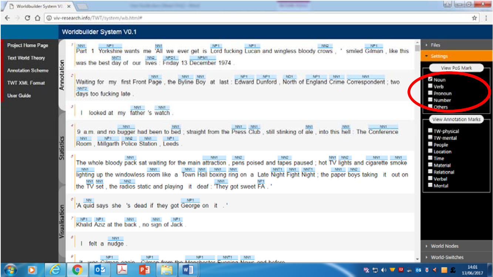
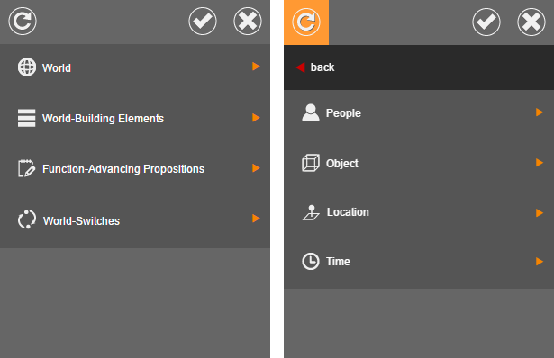
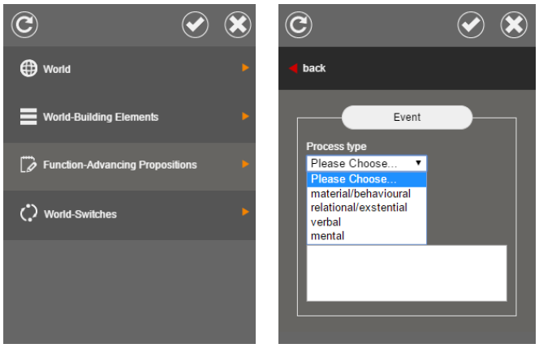
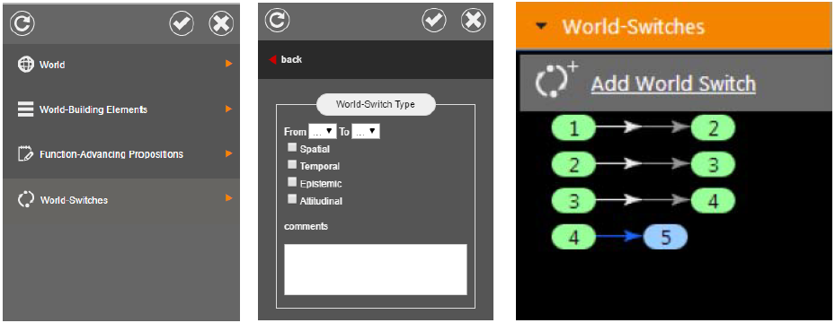
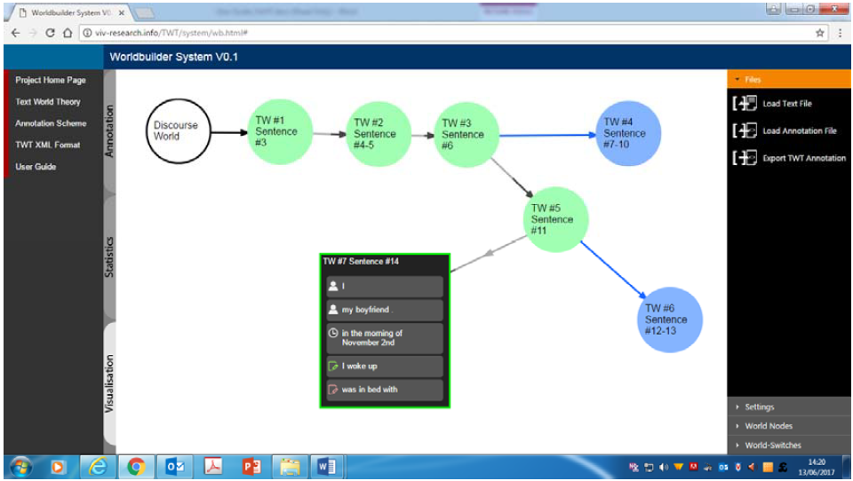
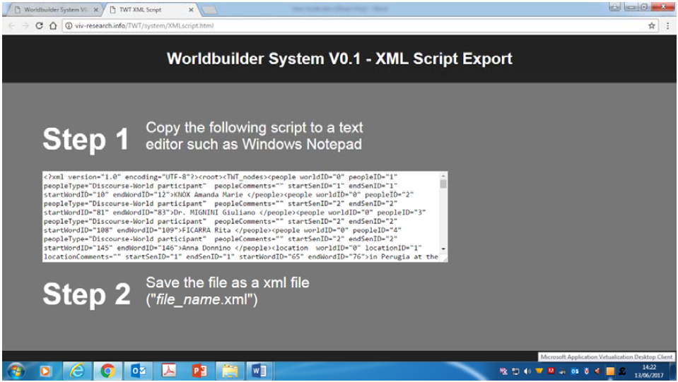

Authors: Jing Wang, Zhijie Xu, Dan McIntyre, Jane Lugea, and Yufang Ho
Department of Informatics / Department of Linguistics and Modern Languages
University of Huddersfield, Queensgate, Huddersfield, HD1 3DH, West Yorkshire, UK
Department of Computing, Faculty of Arts, Computing, Engineering and Sciences
Sheffield Hallam University, sheffield, S1 1WB, South Yorkshire, UK
Worldbuilder is a free web‐based tool for doing Text World Theory analysis. Worldbuilder allows you to upload texts, annotate them for categories derived from Text World Theory, view descriptive statistics for your files and see visualisations of your data.
Access Worldbuilder at http://viv-research.info/TWT/system/wb.html#. Worldbuilder is best viewed using Google Chrome.
Click on Load text file on the right hand side of the screen and select your POS-tagged file. Your text should now be visible in the main window.
Your text will be displayed with POS information above every word (see figure 1 for an example). (A key to the tagset is available at http://ucrel.lancs.ac.uk/claws7tags.html). Click on Settings on the right hand side of the screen and you will see a series of check boxes under the general heading View PoS Marks. Checking or unchecking these will either display or remove the POS tag in question. E.g. if only the Noun check box is ticked, only noun POS tags will be displayed. N.B. Below the View PoS Marks box is a View Annotation Marks box. Until you have added Text World Theory annotation to your text, you will not see any annotation marks other than POS tags.
Now that you have identified a Text World you can start adding information about worldbuilding elements. To do this, highlight whichever parts of your text you wish to annotate and the same dialogue box will appear. Choose World-building Elements (see figure 3).
This now gives you three options:
Remember to click on the tick icon to commit your annotation.
To mark function‐advancing propositions, highlight the relevant part of the text and choose Function Advancing Propositions from the dialogue box (see figure 4). You can then mark the Process type (material/behavioural, relational/existential, verbal, mental) and the Tense (past, present, future) by selecting options from the two drop-down menus. Click the tick icon to commit your annotation.

To add world switch information, highlight the relevant part of your text and select the World Switch option from the dialogue box (see figure 5). Use the drop-down menu to select which number Text World you are switching from and which number Text World you are switching to (these numbers correspond to the numbered Text Worlds that appear in the list on the right hand side of your screen). Then use the check boxes to indicate whether the world switch is spatial, temporal, epistemic or attitudinal.
Once you have annotated your text for TWT categories, you can view your annotations by clicking on the Settings option on the right hand side of the screen. Tick the check boxes to see your desired categories. Clicking on the World Nodes option displays information about all the worlds you have identified and their constituent world-building elements and functionadvancing propositions. Clicking on the World Switches nodes shows you all the world switches that you have marked up.
Once you have annotated your file for TWT categories, click on the Statistics tab on the left hand side of the screen to view descriptive statistics for your file. Here you can see basic statistical information about the number of words and sentences in your text, and the average sentence length. You can also view bar charts showing the number and types of text worlds and world switches in your file. Scroll down the page and you will see a bar chart detailing the number and type of function‐advancing propositions (event process types) in your file. Use the drop‐down menu to view information about event types within particular worlds.
Click on the Visualisation tab on the left hand side of the screen to see an interactive diagram of your annotated text (see figure 6). Circles represent the Discourse World and Text Worlds and arrows indicate the links between them. Click on a Text World to see associated world-building and function-advancing information (click again to hide this). Discourse World and Text Worlds can be moved by dragging with the mouse.
To save your TWT annotated file, you need first to export it. To do this, click on the Files tab on the right hand side of the screen. A dialogue box will appear telling you that Worldbuilder needs to open a new window to export the file. Click OK. Your annotated text will now appear in a box (see figure 7). Select all the text and copy it to a text editor such as Windows Notepad. Save your file as a .xml file.
To edit your TWT annotated file, click on the Files tab on the right hand side of the screen and choose Load Annotation File. Select the .xml file you saved previously and your TWT annotated file will now appear in the main window.